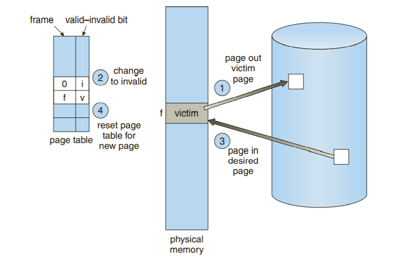
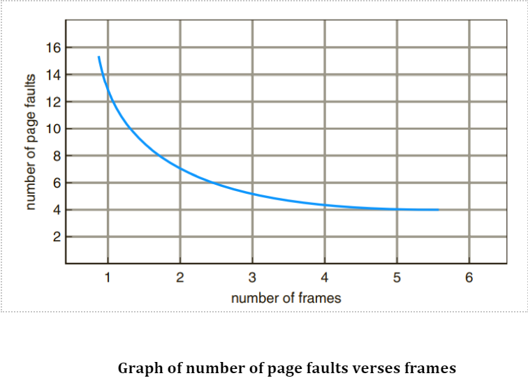

Page replacement is needed in the operating systems that use virtual memory using Demand Paging. As we know that in Demand paging, only a set of pages of a process is loaded into the memory. This is done so that we can have more processes in the memory at the same time.
When a page that is residing in virtual memory is requested by a process for its execution, the Operating System needs to decide which page will be replaced by this requested page. This process is known as page replacement and is a vital component in virtual memory management.
Page replacement is basic to demand paging. It completes the separation between logical memory and physical memory. With this mechanism, an enormous virtual memory can be provided for programmers on a smaller physical memory. With no demand paging, user addresses are mapped into physical addresses, and the two sets of addresses can be different. All the pages of a process still must be in physical memory, however. With demand paging, the size of the logical address space is no longer constrained by physical memory.
Page Fault: A Page Fault occurs when a program running in CPU tries to access a page that is in the address space of that program, but the requested page is currently not loaded into the main physical memory, the RAM of the system.
Since the actual RAM is much less than the virtual memory the page faults occur. So whenever a page fault occurs, the Operating system has to replace an existing page in RAM with the newly requested page. The primary objective of all the page replacement algorithms is to minimize the number of page faults.
In Page Replacement, if no frame is free, we find one that is not currently being used and free it. We can free a frame by writing its contents to swap space and changing the page table to indicate that the page is no longer in memory in below diagram. We can use freed frame to hold the page for the process faulted. We modify the page-fault service routine to include page replacement
We can reduce this overhead by using a modify bit (or dirty bit).
To determine the number of page faults for a particular reference string and page-replacement algorithm, we also need to know the number of page frames available. Obviously, as the number of frames available increases, the number of page faults decreases. Shown in below graph
There are various page replacement algorithms. Each algorithm has a different method by which the pages can be replaced.
Nonpreemptive scheduling algorithms are:
→in this algorithm, a queue is maintained. The page which is assigned the frame first will be replaced first. In other words, the page which resides at the rare end of the queue will be replaced on every page fault.
→ this algorithm replaces the page which has not been referred for a long time. This algorithm is just opposite to the optimal page replacement algorithm. In this, we look at the past instead of staring at future.
→ This algorithm replaces the page which will not be referred for so long in future. Although it cannot be practically implementable but it can be used as a benchmark. Other algorithms are compared to this in terms of optimality.
In these algorithms some algorithms suffer with BELADY’S ANOMALY.
FIFO suffer with Belady’s Anomaly, whereas optimal and LRU doesn’t suffer with Belady’s anomaly.